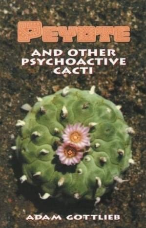

Inicio · Biblioteca · Química y farmacología

Peyote and Other Psychoactive Cacti
Adam Gottlieb
Breve guía sobre cactus mescalínicos, su cultivo y su química.
Edición de referencia
- Editorial
- Ronin Publishing
- Fecha de publicación
- 1997
- Año de la obra
- 1977
- Edición
- 2nd
- Idioma
- Inglés
- ISBN-10
- 091417195X
- ISBN-13
- 978-0914171959
Lecturas relacionadas
- PiHKALAlexander Shulgin y Ann Shulgin · 1991
- The Simple Plant IsoquinolinesAlexander Shulgin y Wendy E. Perry · 2002
- The Shulgin Index, Volume OneAlexander Shulgin, Tania Manning y Paul F. Daley · 2011
- Psychedelic ChemistryMichael Valentine Smith · 1973
- PsilocybinO. T. Oss y O. N. Oeric · 1976
- PharmacotheonJonathan Ott · 1993


Lista orientativa elaborada por APDER. La descripción es nuestra. Incluir un libro no significa que estemos de acuerdo con todo su contenido.